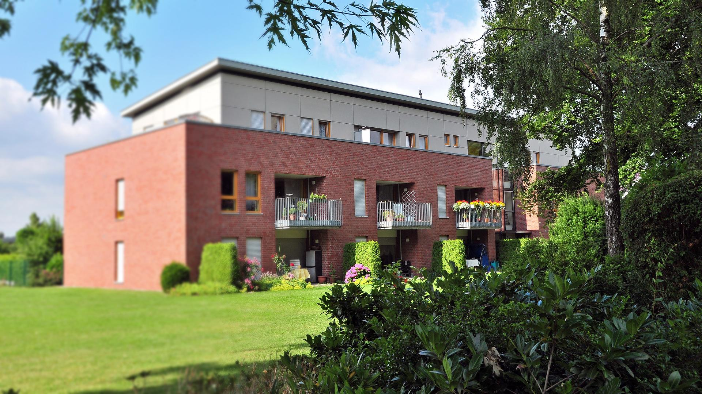
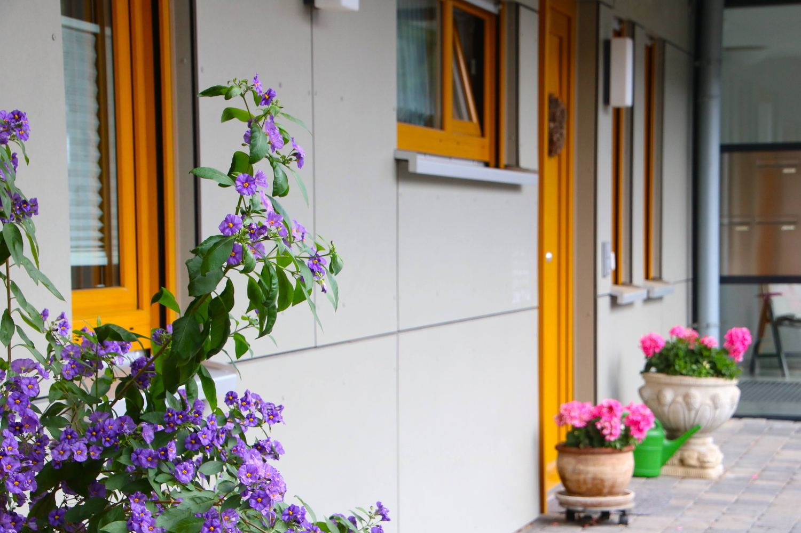
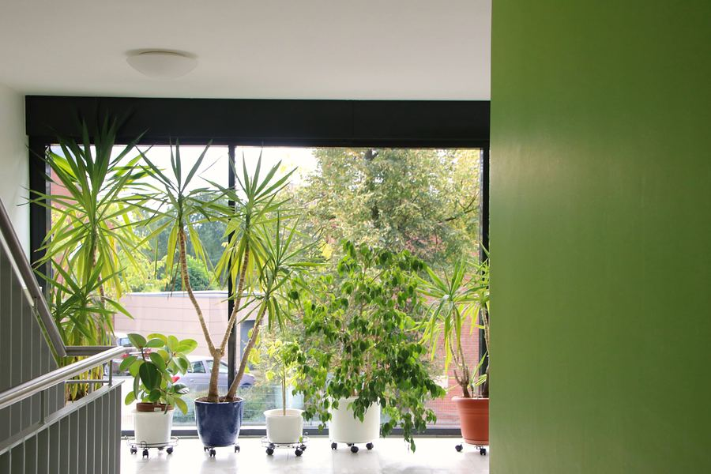
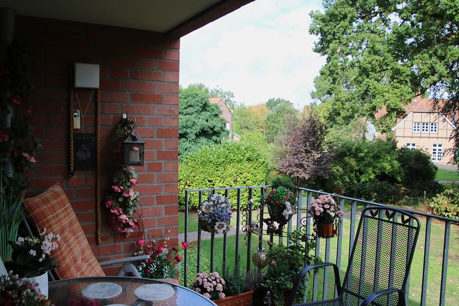
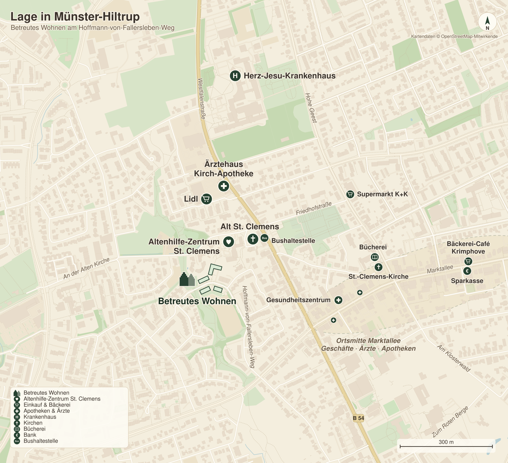

Münster-Hiltrup
Selbstbestimmt leben.
In bester Gesellschaft.
Wohnen Sie in hochwertigem Ambiente – sicher, komfortabel und bestens versorgt im Herzen von Münster-Hiltrup.
Unterstützung im Alltag genau wie Sie es brauchen
Persönliche Ansprechpartner vor Ort vertraut und verlässlich
Wohnambiente mit Stil und Atmosphäre
Mehr als nur Wohnen
Service, genau wie Sie es sich wünschen
In unseren Häusern bieten wir allen Bewohnerinnen und Bewohnern Betreuung und Unterstützung im Alltag. Dafür gibt es ein Basispaket, das Sie jederzeit um zusätzliche Leistungen aufstocken können.
- Gemeinschaft
- Beratung
- Reinigungsdienste
- Wäscheservice
Unsere garantierten Leistungen für Sie
- Basisreinigungen der Wohnräume
- Fensterreinigung
- Wäscheservice für Bettwäsche und Handtücher inkl. Auf- und Abziehen der Betten
- Unterstützung bei der Haustechnik inkl. kleiner Reparaturen
- Regelmäßige Präsenz mit festen Sprechzeiten
- Gespräche bei Fragen des Alltags und zur sozialen Betreuung
- Vermittlung und Koordination weiterer Hilfen wie ambulanter Dienste
- Vorbereitung und Unterstützung der Wohn- und Lebenssituation bei erweitertem Hilfebedarf
- Kontaktbesuche (bei Bedarf einmal wöchentlich)
- Unterstützung und Organisation von Aktivitäten und Veranstaltungen
- Hilfestellung beim Ausfüllen von Anträgen für die Gewährung von Sozialversicherungs- und Sozialhilfeleistungen
- Verwaltungstätigkeit und Dokumentation, Information über Betreuungs- und Serviceleistungen sowie die bevorzugte Aufnahme in die vollstationären und/oder teilstationären Einrichtungen Tageshaus St. Clemens, Tageshaus St. Marien, Meyer-Suhrheinrich-Haus und das Marienheim der Altenhilfe-Zentrum St. Clemens Münster-Hiltrup gGmbH
Weitere Wahlleistungen
- Zusätzliche Wohnungsreinigungen
- Zusätzlicher Wäscheservice
- Zusätzliche Fensterreinigungen
In Rücksprache mit Ihnen können wir ein ganz individuelles Paket anbieten, das sich an Ihre Bedürfnisse anpasst. Dabei versuchen wir ganz auf Ihre Wünsche einzugehen.



Wohnen
Zuhause am Hoffmann-von-Fallersleben-Weg
Unsere Wohnungen in Hiltrup bieten Ihnen den idealen Rückzugsort mitten im Leben. Die zentrale Lage und die guten Verkehrsanbindungen fördern Ihre Selbstständigkeit und Bewegungsfreiheit – für hohe Lebensqualität im Alter.
Bild 1 von 6
Uns ist wichtig, dass Sie sich bei uns wohl fühlen. Dafür bieten wir Ihnen einen hohen Standard, der Barrierefreiheit mit Komfort und Begegnungsräumen verbindet.
Ausstattung der Wohnräume
- Gehobene Wohnausstattung
- Balkon oder Terrasse
- Fußbodenheizung
- Seniorengerechtes Bad
- Aufzug
- Toranlage
- Auto- und Fahrradstellplätze
- Ansprechende Architektur mit Laubengängen
- Gepflegte Grünanlagen
Wohnungstypen
Verschiedene Wohnungstypen – ein Zuhause nach Maß
Vom kompakten Apartment bis zum Penthouse mit Dachterrasse, ob Paarwohnung oder Single-Apartment – für jede Lebenslage haben wir eine Lösung.


Grundriss 1 von 6
Beispielhafte Zusammenstellung vorhandener Grundrisse.
Lage
Mitten in Hiltrup, nah an allem
In unmittelbarer Nachbarschaft finden Sie alles für den täglichen Bedarf:
- Lebensmittelmärkte
- Apotheken und Ärzte
- Bushaltestelle
- Altenhilfe-Zentrum St. Clemens
- Banken
- Kirchen
Und auch die Münsteraner Innenstadt ist mit öffentlichen Verkehrsmitteln schnell erreichbar.
Anschrift
Hoffmann-von-Fallersleben-Weg 30+32, 53+55
48165 Münster (Hiltrup)

Kontakt
Wir sind für Sie da
Jens Damnig
Service & Beratung
Persönliche Termine und Besichtigungen nach Absprache
Telefonische Erreichbarkeit
| Montag | 13:00 – 15:00 Uhr |
|---|---|
| Donnerstag | 10:00 – 12:00 Uhr |